«Ваша сеть только для вас»
Экран net-0e · Mi red: защита

Домашняя сеть: роутер, устройства, гости, безопасность и диагностика.
Экран net-0e · Mi red: защита
Экран net-0f · Mi red: защита

Экран net-0g · Mi red: защита

Экран net-0h · Mi red: защита
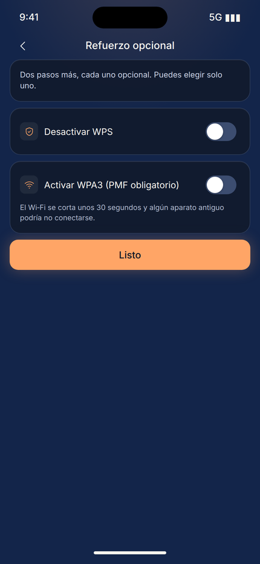
Экран net-sh-mac · Mi red: защита
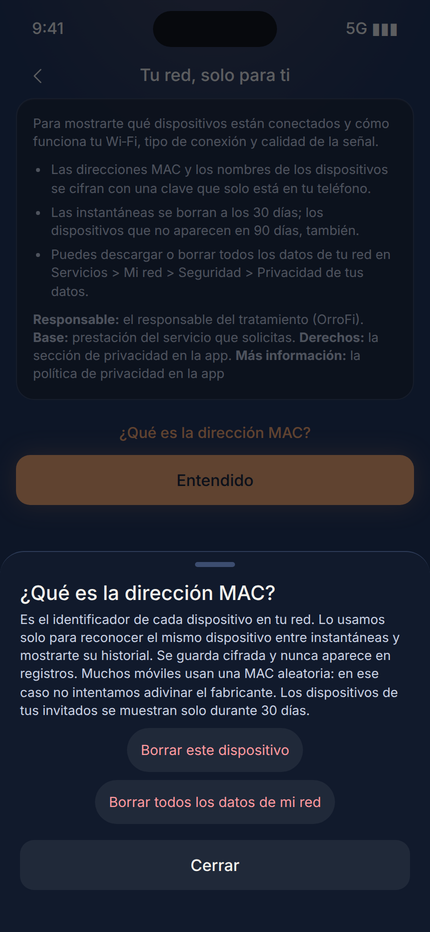
Экран net-00 · Mi red: подключение
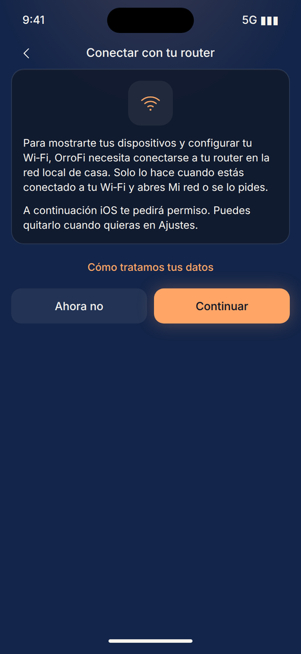
Экран net-00b · Mi red: подключение
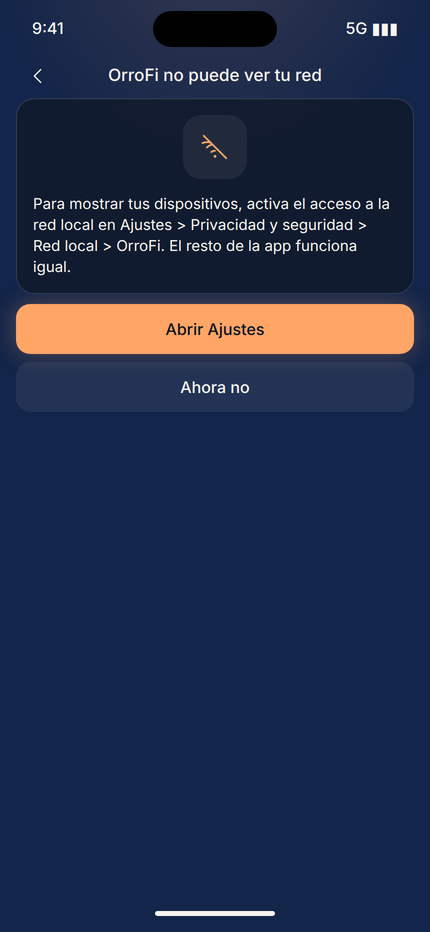
Экран net-00c · Mi red: подключение
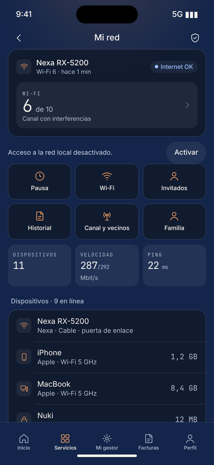
Экран net-0a · Mi red: подключение
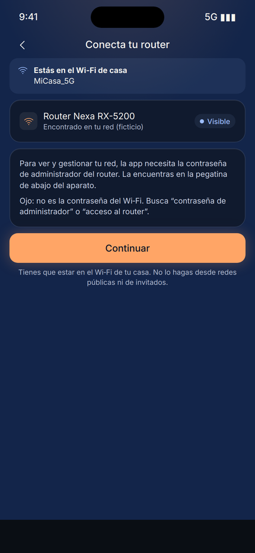
Экран net-0b · Mi red: подключение

Экран net-0c · Mi red: подключение
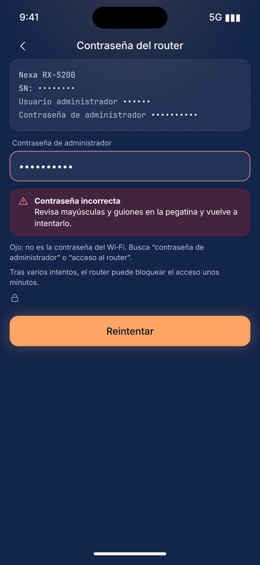
Экран net-0d · Mi red: подключение
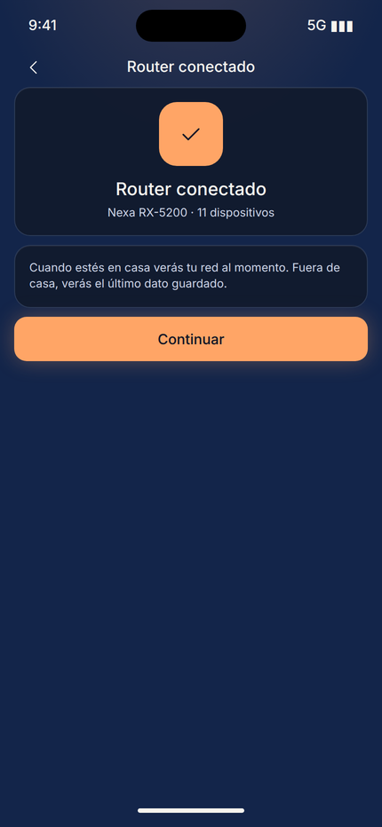
Экран net-entry · Mi red: подключение

Экран net-sys-localnet · Mi red: подключение

Экран net-8 · Wi‑Fi дома

Экран net-6 · Безопасность сети
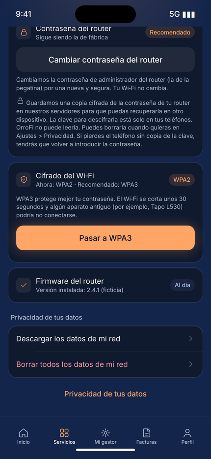
Экран net-sh-bio · Безопасность сети
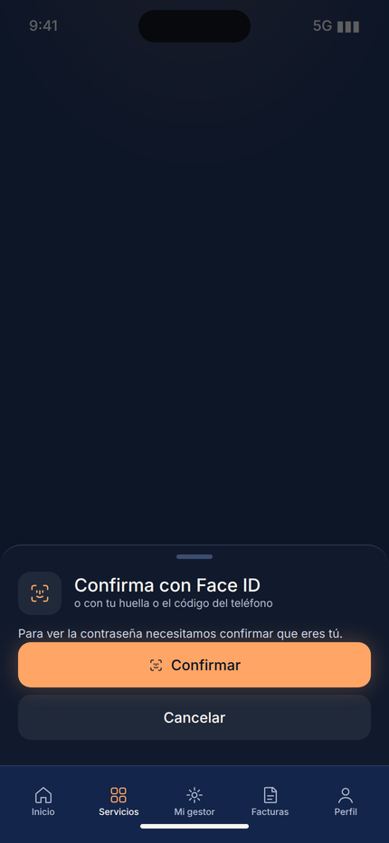
Экран net-9 · Гостевой Wi‑Fi
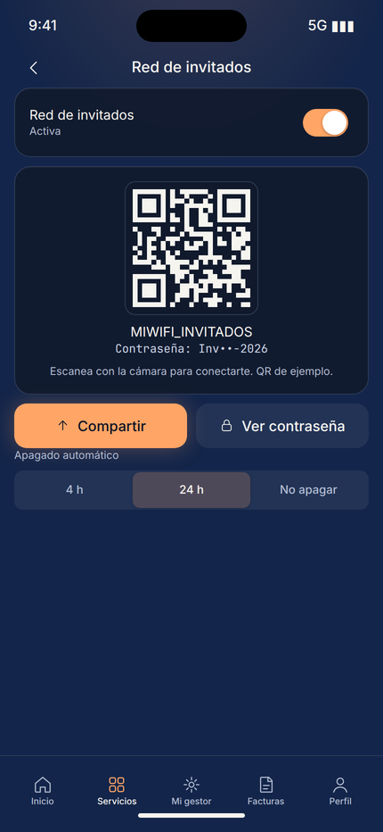
Экран net-9b · Ключи на устройстве

Экран net-sh-delcopy · Ключи на устройстве

Экран net-1 · Обзор домашней сети

Экран net-1b · Обзор домашней сети

Экран net-1c · Обзор домашней сети

Экран net-1d · Обзор домашней сети
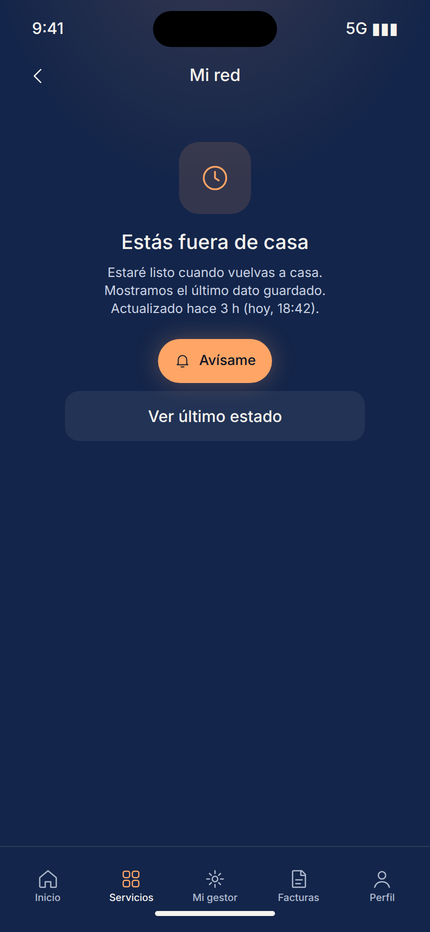
Экран net-12 · Оператор и договор
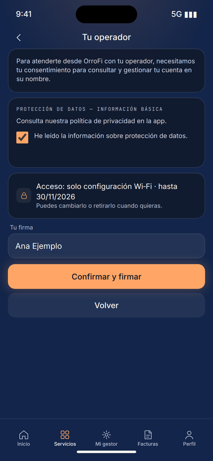
Экран net-12b · Оператор и договор

Экран net-4 · Состояние сети

Экран net-4b · Состояние сети
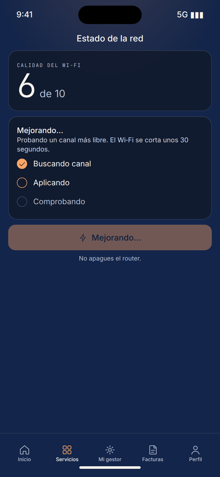
Экран net-4c · Состояние сети

Экран net-4d · Состояние сети

Экран net-5 · Состояние сети
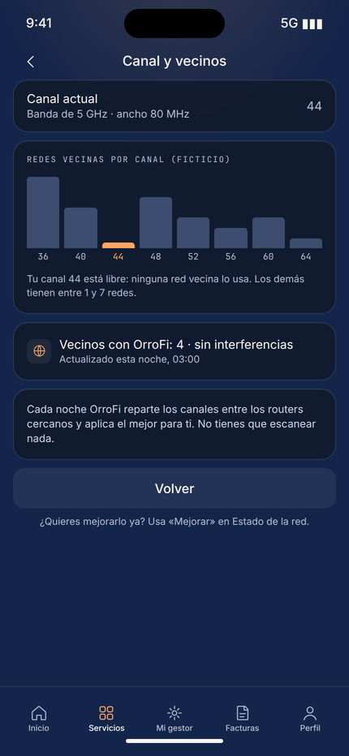
Экран net-7 · Управление роутером

Экран net-7-confirm · Управление роутером

Экран net-1e · Управление сетью

Экран net-3 · Управление сетью
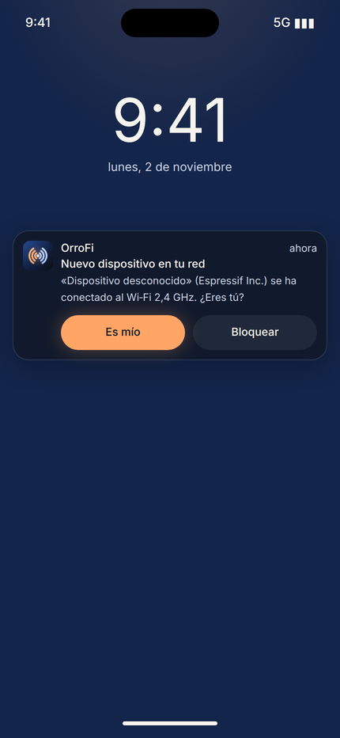
Экран net-2 · Устройства в сети
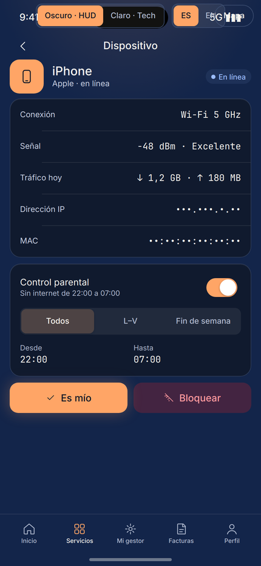
Экран net-3b · Устройства в сети
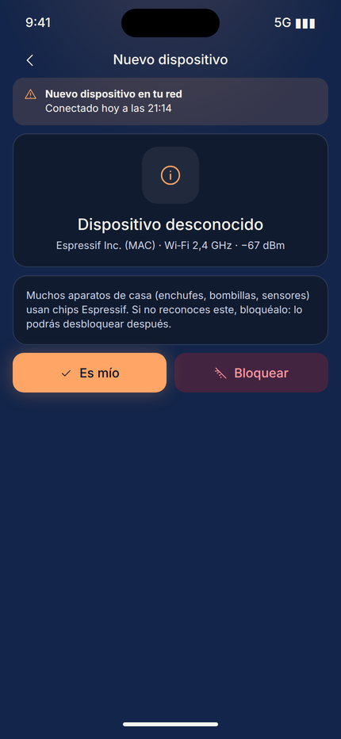